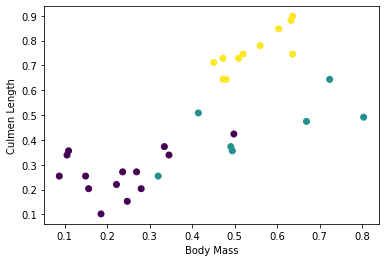
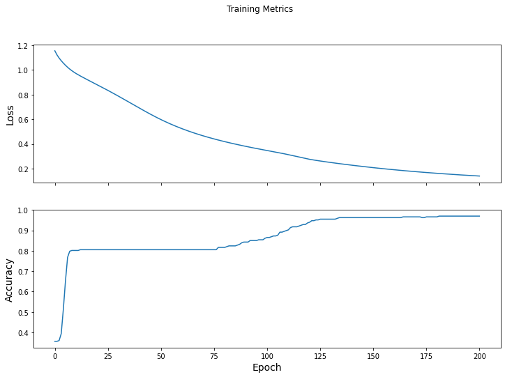

Entrenamiento personalizado — 0:00 min
Última modificación: Marzo 1, 2022 | YouTube
Importación de librerías
[1]:
import os
os.environ["TF_CPP_MIN_LOG_LEVEL"] = "2"
import matplotlib.pyplot as plt
import tensorflow as tf
import tensorflow_datasets as tfds
Importación de datos sin preprocesar para inspección
[2]:
ds_preview, info = tfds.load(
"penguins/simple",
split="train",
with_info=True,
)
df = tfds.as_dataframe(ds_preview.take(5), info)
[3]:
df
[3]:
| body_mass_g | culmen_depth_mm | culmen_length_mm | flipper_length_mm | island | sex | species | |
|---|---|---|---|---|---|---|---|
| 0 | 4200.0 | 13.899999618530273 | 45.5 | 210.0 | 0 (Biscoe) | 0 (FEMALE) | 2 (Gentoo) |
| 1 | 4650.0 | 13.699999809265137 | 40.900001525878906 | 214.0 | 0 (Biscoe) | 0 (FEMALE) | 2 (Gentoo) |
| 2 | 5300.0 | 14.199999809265137 | 51.29999923706055 | 218.0 | 0 (Biscoe) | 1 (MALE) | 2 (Gentoo) |
| 3 | 5650.0 | 15.0 | 47.79999923706055 | 215.0 | 0 (Biscoe) | 1 (MALE) | 2 (Gentoo) |
| 4 | 5050.0 | 15.800000190734863 | 46.29999923706055 | 215.0 | 0 (Biscoe) | 1 (MALE) | 2 (Gentoo) |
[4]:
info.features
[4]:
FeaturesDict({
'body_mass_g': tf.float32,
'culmen_depth_mm': tf.float32,
'culmen_length_mm': tf.float32,
'flipper_length_mm': tf.float32,
'island': ClassLabel(shape=(), dtype=tf.int64, num_classes=3),
'sex': ClassLabel(shape=(), dtype=tf.int64, num_classes=3),
'species': ClassLabel(shape=(), dtype=tf.int64, num_classes=3),
})
[5]:
# 0: Adélie penguin
# 1: Chinstrap penguin
# 2: Gentoo penguin
class_names = ["Adélie", "Chinstrap", "Gentoo"]
Descarga del dataset preprocesado
[6]:
ds_split, info = tfds.load(
"penguins/processed",
split=["train[:20%]", "train[20%:]"],
as_supervised=True,
with_info=True,
)
ds_test = ds_split[0]
ds_train = ds_split[1]
assert isinstance(ds_test, tf.data.Dataset)
print(info.features)
df_test = tfds.as_dataframe(ds_test.take(5), info)
print("Test dataset sample: ")
print(df_test)
print()
print()
df_train = tfds.as_dataframe(ds_train.take(5), info)
print("Train dataset sample: ")
print(df_train)
ds_train_batch = ds_train.batch(32)
FeaturesDict({
'features': Tensor(shape=(4,), dtype=tf.float32),
'species': ClassLabel(shape=(), dtype=tf.int64, num_classes=3),
})
Test dataset sample:
features species
0 [0.6545454, 0.22619048, 0.89830506, 0.6388889] 2
1 [0.36, 0.04761905, 0.6440678, 0.4027778] 2
2 [0.68, 0.30952382, 0.91525424, 0.6944444] 2
3 [0.6181818, 0.20238096, 0.8135593, 0.6805556] 2
4 [0.5527273, 0.26190478, 0.84745765, 0.7083333] 2
Train dataset sample:
features species
0 [0.49818182, 0.6904762, 0.42372882, 0.4027778] 0
1 [0.48, 0.071428575, 0.6440678, 0.44444445] 2
2 [0.7236364, 0.9047619, 0.6440678, 0.5833333] 1
3 [0.34545454, 0.5833333, 0.33898306, 0.3472222] 0
4 [0.10909091, 0.75, 0.3559322, 0.41666666] 0
[7]:
features, labels = next(iter(ds_train_batch))
print(features)
print(labels)
tf.Tensor(
[[0.49818182 0.6904762 0.42372882 0.4027778 ]
[0.48 0.07142857 0.6440678 0.44444445]
[0.7236364 0.9047619 0.6440678 0.5833333 ]
[0.34545454 0.5833333 0.33898306 0.3472222 ]
[0.10909091 0.75 0.3559322 0.41666666]
[0.6690909 0.63095236 0.47457626 0.19444445]
[0.8036364 0.9166667 0.4915254 0.44444445]
[0.4909091 0.75 0.37288135 0.22916667]
[0.33454546 0.85714287 0.37288135 0.2361111 ]
[0.32 0.41666666 0.2542373 0.1388889 ]
[0.41454545 0.5952381 0.5084746 0.19444445]
[0.14909092 0.48809522 0.2542373 0.125 ]
[0.23636363 0.4642857 0.27118644 0.05555556]
[0.22181818 0.5952381 0.22033899 0.3472222 ]
[0.24727273 0.5595238 0.15254237 0.25694445]
[0.63272727 0.35714287 0.88135594 0.8194444 ]
[0.47272727 0.15476191 0.6440678 0.4722222 ]
[0.6036364 0.23809524 0.84745765 0.7361111 ]
[0.26909092 0.5595238 0.27118644 0.16666667]
[0.28 0.71428573 0.20338982 0.5416667 ]
[0.10545454 0.5714286 0.33898306 0.2847222 ]
[0.18545455 0.5952381 0.10169491 0.33333334]
[0.47272727 0.16666667 0.7288136 0.6388889 ]
[0.45090908 0.1904762 0.7118644 0.5972222 ]
[0.49454546 0.5 0.3559322 0.25 ]
[0.6363636 0.22619048 0.7457627 0.5694444 ]
[0.08727273 0.5952381 0.2542373 0.05555556]
[0.52 0.22619048 0.7457627 0.5555556 ]
[0.5090909 0.23809524 0.7288136 0.6666667 ]
[0.56 0.22619048 0.779661 0.625 ]
[0.6363636 0.3452381 0.89830506 0.8333333 ]
[0.15636364 0.47619048 0.20338982 0.04166667]], shape=(32, 4), dtype=float32)
tf.Tensor([0 2 1 0 0 1 1 1 0 1 1 0 0 0 0 2 2 2 0 0 0 0 2 2 1 2 0 2 2 2 2 0], shape=(32,), dtype=int64)
[8]:
plt.scatter(features[:, 0], features[:, 2], c=labels, cmap="viridis")
plt.xlabel("Body Mass")
plt.ylabel("Culmen Length")
plt.show()

Construcción de un modelo usando Keras
[9]:
model = tf.keras.Sequential(
[
tf.keras.layers.Dense(10, activation=tf.nn.relu, input_shape=(4,)),
tf.keras.layers.Dense(10, activation=tf.nn.relu),
tf.keras.layers.Dense(3),
]
)
Uso del modelo
[10]:
predictions = model(features)
predictions[:5]
[10]:
<tf.Tensor: shape=(5, 3), dtype=float32, numpy=
array([[-0.4678175 , -0.18254259, 0.28926557],
[-0.2955722 , -0.12463523, 0.16737409],
[-0.6495056 , -0.25587952, 0.40303886],
[-0.3737625 , -0.13161825, 0.2184594 ],
[-0.4069265 , -0.07425484, 0.17582989]], dtype=float32)>
[11]:
#
# uso de la función softmax
#
tf.nn.softmax(predictions[:5])
[11]:
<tf.Tensor: shape=(5, 3), dtype=float32, numpy=
array([[0.22410592, 0.29808947, 0.4778046 ],
[0.26488915, 0.3142687 , 0.4208421 ],
[0.18701105, 0.27721512, 0.5357739 ],
[0.24497919, 0.3120981 , 0.44292265],
[0.23891109, 0.33320674, 0.4278822 ]], dtype=float32)>
[12]:
print("Prediction: {}".format(tf.argmax(predictions, axis=1)))
print(" Labels: {}".format(labels))
Prediction: [2 2 2 2 2 2 2 2 2 2 2 2 2 2 2 2 2 2 2 2 2 2 2 2 2 2 2 2 2 2 2 2]
Labels: [0 2 1 0 0 1 1 1 0 1 1 0 0 0 0 2 2 2 0 0 0 0 2 2 1 2 0 2 2 2 2 0]
Entrenamiento del modelo
Definición de la función de pérdida y el gradiente
[13]:
loss_object = tf.keras.losses.SparseCategoricalCrossentropy(from_logits=True)
[14]:
def loss(model, x, y, training):
#
# training=training es necesario para capas que tienen comportamiento
# diferente durante el entrenamiento y la inferencia.
#
y_ = model(x, training=training)
return loss_object(y_true=y, y_pred=y_)
l = loss(model, features, labels, training=False)
print("Loss test: {}".format(l))
Loss test: 1.1693785190582275
[15]:
def grad(model, inputs, targets):
with tf.GradientTape() as tape:
loss_value = loss(model, inputs, targets, training=True)
return loss_value, tape.gradient(loss_value, model.trainable_variables)
Creación del optimizador
[16]:
optimizer = tf.keras.optimizers.SGD(
learning_rate=0.01,
)
[17]:
loss_value, grads = grad(model, features, labels)
print(
"Step: {}, Initial Loss: {}".format(
optimizer.iterations.numpy(), loss_value.numpy()
)
)
optimizer.apply_gradients(zip(grads, model.trainable_variables))
print(
"Step: {}, Loss: {}".format(
optimizer.iterations.numpy(),
loss(model, features, labels, training=True).numpy(),
)
)
Step: 0, Initial Loss: 1.1693785190582275
Step: 1, Loss: 1.164750576019287
Ciclo de entrenamiento
[18]:
train_loss_results = []
train_accuracy_results = []
num_epochs = 201
for epoch in range(num_epochs):
epoch_loss_avg = tf.keras.metrics.Mean()
epoch_accuracy = tf.keras.metrics.SparseCategoricalAccuracy()
for x, y in ds_train_batch:
loss_value, grads = grad(model, x, y)
optimizer.apply_gradients(zip(grads, model.trainable_variables))
epoch_loss_avg.update_state(loss_value) # Add current batch loss
epoch_accuracy.update_state(y, model(x, training=True))
train_loss_results.append(epoch_loss_avg.result())
train_accuracy_results.append(epoch_accuracy.result())
if epoch % 50 == 0:
print(
"Epoch {:03d}: Loss: {:.3f}, Accuracy: {:.3%}".format(
epoch, epoch_loss_avg.result(), epoch_accuracy.result()
)
)
Epoch 000: Loss: 1.155, Accuracy: 35.581%
Epoch 050: Loss: 0.598, Accuracy: 80.524%
Epoch 100: Loss: 0.347, Accuracy: 86.517%
Epoch 150: Loss: 0.208, Accuracy: 96.255%
Epoch 200: Loss: 0.140, Accuracy: 97.004%
Visualización de los resultados por iteración
[19]:
fig, axes = plt.subplots(2, sharex=True, figsize=(12, 8))
fig.suptitle("Training Metrics")
axes[0].set_ylabel("Loss", fontsize=14)
axes[0].plot(train_loss_results)
axes[1].set_ylabel("Accuracy", fontsize=14)
axes[1].set_xlabel("Epoch", fontsize=14)
axes[1].plot(train_accuracy_results)
plt.show()

Evaluación del modelo
[20]:
test_accuracy = tf.keras.metrics.Accuracy()
ds_test_batch = ds_test.batch(10)
for (x, y) in ds_test_batch:
# training=False is needed only if there are layers with different
# behavior during training versus inference (e.g. Dropout).
logits = model(x, training=False)
prediction = tf.argmax(logits, axis=1, output_type=tf.int64)
test_accuracy(prediction, y)
print("Test set accuracy: {:.3%}".format(test_accuracy.result()))
Test set accuracy: 97.015%
[21]:
tf.stack([y, prediction], axis=1)
[21]:
<tf.Tensor: shape=(7, 2), dtype=int64, numpy=
array([[1, 1],
[0, 0],
[2, 2],
[0, 0],
[1, 1],
[2, 2],
[0, 0]])>
Uso del modelo
[22]:
predict_dataset = tf.convert_to_tensor(
[
[
0.3,
0.8,
0.4,
0.5,
],
[
0.4,
0.1,
0.8,
0.5,
],
[0.7, 0.9, 0.8, 0.4],
]
)
# training=False is needed only if there are layers with different
# behavior during training versus inference (e.g. Dropout).
predictions = model(predict_dataset, training=False)
for i, logits in enumerate(predictions):
class_idx = tf.argmax(logits).numpy()
p = tf.nn.softmax(logits)[class_idx]
name = class_names[class_idx]
print("Example {} prediction: {} ({:4.1f}%)".format(i, name, 100 * p))
Example 0 prediction: Adélie (93.8%)
Example 1 prediction: Gentoo (98.1%)
Example 2 prediction: Chinstrap (88.1%)